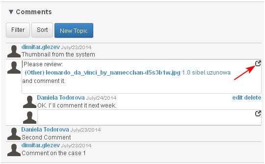

- The creator of comment may edit his/ her own comments.
- Any user may edit the body text of his/her own reply on comments. Comments associated with certain 1st class objects (e.g., projects, tasks or objects) that have been locked or are in a certain predefined states may not be edited without special override permissions. (Not Ready)
- The system administrator and the project manager may edit any and all comments.
Any comment's metadata (except for the create date/time and creator fields), body text, and replies may be edited after being saved.
The comment status could be changed by selecting the corresponding action (Suspend/ Release) when the comment is opened for review.
Edit Type
- The user opens the comment and clicks the button "edit" (1-2).

- The system opens body text of the comment in edit mode and the user selects the expand icon:

- Thy system opens the expanded form of the comment. The user selects another comment type from a drop-down menu (1-2-3).

- The selected type appears in the corresponding field (1) and the user saves the changes clicking "Post" (2).

- The changed selected type of the comment is saved.
Edit Status
- The user opens the comment for review and selects from the drop down menu the corresponding action.
- if "suspend" is selected, the status of the comment turns to "On Hold" (1-2-3).

Note: When a comment is with status "On Hold" the comment cannot be edited.
- if "restart" is selected, the status of the comment turns to "In Progress"

Note: When a comment is with status "In Progress" the comment can be edited.
Edit Body Text
- The user opens the comment and clicks the button "edit" (1-2).

- The system opens the comment's body text in edit mode. The user edits the text (1) and saves the changes clicking "the "Enter" key from the PC keyboard.
- If needed the user may edit the text body in the expanded form selecting it from the opened comment (2) and save the changes clicking "Post".

- The changes are saved in the comment's body.